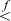

. In C, this can be expressed as1
. In C, this can be expressed as1God created the integers,
all else is the work of man.
Leopold Kronecker
Operating on floating-point numbers with integer arithmetic and logical instructions is often a messy proposition. This is particularly true for the rules and formats of the IEEE Standard for Floating-Point Arithmetic, IEEE Std. 754-2008, commonly known as “IEEE arithmetic.” It has the NaN (not a number) and infinities, which are special cases for almost all operations. It has plus and minus zero, which must compare equal to one another. It has a fourth comparison result, “unordered.” The most significant bit of the fraction is not explicitly present in “normal” numbers, but it is in “subnormal” numbers. The fraction is in signed-true form and the exponent is in biased form, whereas integers are now almost universally in two’s-complement form. There are, of course, reasons for all this, but it results in programs that deal with the representation being full of tests and branches, and that present a challenge to implement efficiently.
We assume the reader has some familiarity with the IEEE standard, and summarize it here only very briefly.
The 2008 standard includes three binary and two decimal formats. We will restrict our attention to the binary “single” and “double” formats (32- and 64-bit). These are shown below.
The sign bit s is encoded as 0 for plus, 1 for minus. The biased exponent e and fraction f are magnitudes with their most significant bits on the left. The floating-point value represented is encoded as shown on the next page.
As an example, consider encoding the number π in single format. In binary [Knu1],
π ≈ 11.0010 0100 0011 1111 0110 1010 1000 1000 1000 0101 1010 0011 0000 10....
This is in the range of the “normal” numbers shown in the third row of the table above. The most significant 1 in π is dropped, as the leading 1 is not stored in the encoding of normal numbers. The exponent e – 127 should be 1, to get the binary point in the right place, and hence e = 128. Thus, the representation is
0 10000000 10010010000111111011011
or, in hexadecimal,
40490FDB,
where we have rounded the fraction to the nearest representable number.
Numbers with 1 ≤ e ≤ 254 are the “normal numbers.” These are “normalized,” meaning that their most significant bit is 1 and it is not explicitly stored. Nonzero numbers with e = 0 are called “subnormal numbers,” or simply “subnormals.” Their most significant bit is explicitly stored. This scheme is sometimes called “gradual underflow.” Some extreme values in the various ranges of floating-point numbers are shown in Table 17–1. In this table, “Max integer” means the largest integer such that all integers less than or equal to it, in absolute value, are representable exactly; the next integer is rounded.
For normal numbers, one unit in the last position (ulp) has a relative value ranging from 1 / 224 to 1 / 223 (about 5.96 × 10–8 to 1.19 × 10–7) for single format, and from 1 / 253 to 1 / 252 (about 1.11 × 10–16 to 2.22 × 10–16) for double format. The maximum “relative error,” for round to nearest mode, is half of those figures.
The range of integers that is represented exactly is from –224 to +224(–16,777,216 to +16,777,216) for single format, and from –253 to +253(–9,007,199,254,740,992 to +9,007,199,254,740,992) for double format. Of course, certain integers outside these ranges, such as larger powers of 2, can be represented exactly; the ranges cited are the maximal ranges for which all integers are represented exactly.
One might want to change division by a constant to multiplication by the reciprocal. This can be done with complete (IEEE) accuracy only for numbers whose reciprocals are represented exactly. These are the powers of 2 from 2–127 to 2127 for single format, and from 2–1023 to 21023 for double format. The numbers 2–127 and 2–1023 are subnormal numbers, which are best avoided on machines that implement operations on subnormal numbers inefficiently.
Table 17–2 gives some formulas for conversion between IEEE floating-point format and integers. These methods are concise and fast, but they do not give the correct result for the full range of input values. The ranges over which they do give the precisely correct result are given in the table. They all give the correct result for ±0.0 and for subnormals within the stated ranges. Most do not give a reasonable result for a NaN or infinity. These formulas may be suitable for direct use in some applications, or in a library routine to get the common cases quickly.
TABLE 17–2. FLOATING-POINT CONVERSIONS
The Type column denotes the type of conversion desired, including the rounding mode: n for round to nearest even, d for round down, u for round up, and z for round toward zero. The R column denotes the rounding mode that the machine must be in for the formula to give the correct result. (On some machines, such as the Intel IA-32, the rounding mode can be specified in the instruction itself, rather than in a “mode” register.)
A “double” is an IEEE double, which is 64 bits in length. A “float” is an IEEE single, which is 32 bits in length.
The notation “ulp” means one unit in the last position. For example, 1.0 – ulp denotes the IEEE-format number that is closest to 1.0 but less than 1.0, something like 0.99999.... The notation “int64” denotes a signed 64-bit integer (two’s-complement), and “int32” denotes a signed 32-bit integer. “uint64” and “uint32” have similar meanings, but for unsigned interpretations.
The function low32(x) extracts the low-order 32 bits of x.
The operators and denote double- and single-precision floating-point addition, respectively. Similarly, the operators and denote double- and single-precision subtraction.
It might seem curious that on most Intel machines the double to integer (of any size) conversions require that the machine’s precision mode be reduced to 53 bits, whereas for float to integer conversions, the reduction in precision is not necessary—the correct result is obtained with the machine running in extended-precision mode (64 bits of precision). This is because for the double-precision add of the constant, the fraction might be shifted right as many as 52 bits, which may cause 1-bits to be shifted beyond the 64-bit limit, and hence lost. Thus, two roundings occur—first to 64 bits and then to 53 bits. On the other hand, for the single-precision add of the constant, the maximum shift is 23 bits. With that small shift amount, no bit can be shifted beyond the 64-bit boundary, so that only one rounding operation occurs. The conversions from float to integer get the correct result on Intel machines in all three precision modes.
On Intel machines running in extended-precision mode, the conversions from double to int64 and uint64 can be done without changing the precision mode by using different constants and one more floating-point operation. The calculation is where and denote extended-precision addition and subtraction, respectively. (The result of the add must remain in the 80-bit register for use by the extended-precision subtract operation.)
For double to int64,
c1 = 0x43E00300 00000000 = 263 + 252 + 251
c2 = 0x43E00000 00000000 = 263
c3 = 0x43380000 00000000 = 252 + 251.
For double to uint64,
c1 = 0x43E00200 00000000 = 263 + 252
c2 = 0x43E00000 00000000 = 263
c3 = 0x43300000 00000000 = 252.
Using these constants, similar expressions can be derived for the conversion and rounding operations shown in Table 17–2 that are flagged by Note 1. The ranges of applicability are close to those shown in the table.
However, for the round double to nearest operation, if the calculation subtracts first and then adds, that is,
(using the first set of constants above), then the range for which the correct result is obtained is – 251 – 0.5 to ∞, but not a NaN.
One of the features of the IEEE encodings is that non-NaN values are properly ordered if treated as signed magnitude integers.
To program a floating-point comparison using integer operations, it is necessary that the “unordered” result not be needed. In IEEE 754, the unordered result occurs when one or both comparands are NaNs. The methods below treat NaNs as if they were numbers greater in magnitude than infinity.
The comparisons are also much simpler if -0.0 can be treated as strictly less than +0.0 (which is not in accordance with IEEE 754). Assuming this is acceptable, the comparisons can be done as shown below, where , , and denote floating-point comparisons, and the ≈ symbol is used as a reminder that these formulas do not treat ±0.0 quite right. These comparisons are the same as IEEE 754-2008’s “total-ordering” predicate.
If -0.0 must be treated as equal to +0.0, there does not seem to be any slick way to do it, but the following formulas, which follow more or less obviously from the above, are possibilities.
In some applications, it might be more efficient to first transform the numbers in some way, and then do a floating-point comparison with a single fixed-point comparison instruction. For example, in sorting n numbers, the transformation would be done only once to each number, whereas a comparison must be done at least times (in the minimax sense).
Table 17–3 gives four such transformations. For those in the left column, -0.0 compares equal
to +0.0, and for those in the right column, -0.0 compares less than +0.0. In all cases,
the sense of the comparison is not altered by the transformation. Variable n is signed, t is unsigned, and c may be either signed or unsigned.
The last row shows branch-free code that can be implemented on our basic RISC in four instructions for the left column, and three for the right column (these four or three instructions must be executed for each comparand).
TABLE 17-3. PRECONDITIONING FLOATING-POINT NUMBERS FOR INTEGER COMPARISONS
In the early 2000s, there was some buzz in programming circles about an amazing routine for computing an approximation to the reciprocal square root of a number in IEEE single format. The routine is useful in graphics applications, for example, to normalize a vector by multiplying its components x, y, and z by . C code for the function is shown in Figure 17–1 [Taro].
The relative error of the result is in the range 0 to -0.00176 for all normal single-precision numbers (it errs on the low side). It gives the correct IEEE result (NaN) if its argument is a NaN. However, it gives an unreasonable result if its argument is ±∞, a negative number, or -0. If the argument is +0 or a positive subnormal, the result is not what it should be, but it is a large number (greater than 9 x 1018), which might be acceptable in some applications.
The relative error can be reduced in magnitude, to the range ±0.000892, by changing the constant 1.5 in the Newton step to 1.5008908.
Another possible refinement is to replace the multiplication by 0.5 with a subtract
of 1 from the exponent of x. That is, replace the definition of xhalf with
union {int ihalf; float xhalf;};
ihalf = ix - 0x00800000;
However, the function then gives inaccurate results (although greater than 6 × 1018) for x a normal number less than about 2.34 × 10-38, and NaN for x a subnormal number. For x = 0 the result is ±∞ (which is correct).
The Newton step is a standard Newton-Raphson calculation for the reciprocal square root function (see Appendix B). Simply repeating this step reduces the relative error to the range 0 to -0.0000047. The optimal constant for this is 0x5F37599E.
On the other hand, deleting the Newton step results in a substantially faster function
with a relative error within ±0.035, using a constant of 0x5F37642F. It consists of
only two integer instructions, plus code to load the constant. (The variable xhalf can be deleted.)
float rsqrt(float x0) {
union {int ix; float x;};
x = x0; // x can be viewed as int.
float xhalf = 0.5f*x;
ix = 0x5f375a82 - (ix >> 1); // Initial guess.
x = x*(1.5f - xhalf*x*x); // Newton step.
return x;
}
FIGURE 17–1. Approximate reciprocal square root.
To get an inkling of why this works, suppose x = 2n (1 + f), where n is the unbiased exponent and f is the fraction (0 ≤ f < 1). Then
Ignoring the fraction, this shows that we must change the biased exponent from 127
+ n to 127 -n/2. If e = 127 +n, then 127 –n/2 = 127 – (e – 127)/2 = 190.5 –e/2. Therefore, it appears that a calculation something like shifting x right one position and subtracting it from 190 in the exponent position, might give
a very rough approximation to . In C, this can be expressed as1
union {int ix; float x;}; // Make ix and x overlap.
...
0x5F000000 - (ix >> 1); // Refer to x as integer ix.
To find a better value for the constant 0x5F000000 by analysis is difficult. Four cases must be analyzed: the cases in which a 0-bit or a 1-bit is shifted from the exponent field to the fraction field, and the cases in which the subtraction does or does not generate a borrow that propagates to the exponent field. This analysis is done in [Lomo]. Here, we make some simple observations.
Using rep(x) to denote the representation of the floating-point number x in IEEE single format, we want a formula of the form
for some constant k. (Whether the shift is signed or unsigned makes no difference, because we exclude negative values of x and -0.0.) We can get an idea of roughly what k should be from
and trying a few values of x. The results are shown in Table 17–4 (in hexadecimal).
It looks like k is approximately a constant. Notice that the same value is obtained for x = 1.0 and 4.0. In fact, the same value of k results from any number x and 4x (provided they are both normal numbers). This is because, in the formula for k, if x is quadrupled, then the term rep decreases by 1 in the exponent field, and the term rep increases by 1 in the exponent field.
More significantly, the relative errors for x and 4x are exactly the same, provided both quantities are normal numbers. To see this, it
can be shown that if the argument x of the rsqrt function is quadrupled, the result of the function is exactly halved, and this is true no matter how many Newton steps are done. Of course,
is also halved. Therefore, the relative error is unchanged.
TABLE 17–4. DETERMINING THE CONSTANT
This is important, because it means that if we find an optimal value (by some criterion, such as minimizing the maximum absolute value of the error) for values of x in the range 1.0 to 4.0, then the same value of k is optimal for all normal numbers.
It is then a straightforward task to write a program that, for a given value of k, calculates the true value of (using a known accurate library routine) and the estimated value for some 10,000 or so values of x from 1.0 to 4.0, and calculates the maximum error. The optimal value of k can be determined by hand, which is tedious but sometimes illuminating. It is quite amazing that there is a constant for which the error is less than ±3.5% in a function that uses only two integer operations and no table lookup.
When IBM introduced the System/360 computer in 1964, numerical analysts were horrified at the loss of precision of single-precision arithmetic. The previous IBM computer line, the 704 - 709 - 7090 family, had a 36-bit word. For single-precision floating-point, the format consisted of a 9-bit sign and exponent field, followed by a 27-bit fraction in binary. The most significant fraction bit was explicitly included (in “normal” numbers), so quantities were represented with a precision of 27 bits.
The S/360 has a 32-bit word. For single-precision, IBM chose to have an 8-bit sign and exponent field followed by a 24-bit fraction. This drop from 27 to 24 bits was bad enough, but it gets worse. To keep the exponent range large, a unit in the 7-bit exponent of the S/360 format represents a factor of 16. Thus, the fraction is in base 16, and this format came to be called “hexadecimal” floating-point. The leading digit can be any number from 1 to 15 (binary 0001 to 1111). Numbers with leading digit 1 have only 21 bits of precision (because of the three leading 0’s), but they should constitute only 1/15 (6.7%) of all numbers.
No, it’s worse than that! There was a flurry of activity to show, both analytically and empirically, that leading digits are not uniformly distributed. In hexadecimal floating-point, one would expect 25% of the numbers to have leading digit 1, and hence only 21 bits of precision.
Let us consider the distribution of leading digits in decimal. Suppose you have a large set of numbers with units, such as length, volume, mass, speed, and so on, expressed in “scientific” notation (e.g., 6.022 x 1023). If the leading digit of a large number of such numbers has a well-defined distribution function, then it must be independent of the units—whether inches or centimeters, pounds or kilograms, and so on. Thus, if you multiply all the numbers in the set by any constant, the distribution of leading digits should be unchanged. For example, considering multiplying by 2, we conclude that the number of numbers with leading digit 1 (those from 1.0 to 1.999... times 10 to some power) must equal the number of numbers with leading digit 2 or 3 (those from 2.0 to 3.999... times 10 to some power), because it shouldn’t matter if our unit of length is inches or half inches, or our unit of mass is kilograms or half kilograms, and so on.
Let f(x), for 1 ≤ x < 10, be the probability density function for the leading digits of the set of numbers with units. f(x) has the property that
is the proportion of numbers that have leading digits ranging from a to b. Referring to the figure below, for a small increment Δ x in x, f must satisfy
f(1) · Δx = f(x) · xΔx,
because f (1) · Δx is, approximately, the proportion of numbers ranging from 1 to 1 + Δx (ignoring a multiplier of a power of 10), and f(x) · x Δx is the approximate proportion of numbers ranging from x to x + x Δx. Because the latter set is the first set multiplied by x, their proportions must be equal. Thus, the probability density function is a simple reciprocal relationship,
f(x) = f(1) / x.
Because the area under the curve from x = 1 to x = 10 must be 1 (all numbers have leading digits from 1.000... to 9.999...), it is easily shown that
f(1) = 1/ln10.
The proportion of numbers with leading digits in the range a to b, with 1 ≤ a ≤ b < 10, is
Thus, in decimal, the proportion of numbers with leading digit 1 is log10(2 / 1) ≈ 0.30103, and the proportion of numbers with leading digit 9 is log10(10 / 9) ≈ 0.0458.
For base 16, the proportion of numbers with leading digits in the range a to b, with 1 ≤ a ≤ b < 16, is similarly derived to be log16(b / a). Hence, the proportion of numbers with leading digit 1 is log16(2 / 1) = 1 / log216 = 0.25.
Table 17–5 shows the IEEE representation of miscellaneous values that may be of interest. The values that are not exact are rounded to the nearest representable value.
TABLE 17–5. MISCELLANEOUS VALUES
IEEE 754 does not specify how the signaling and quiet NaNs are distinguished. Table 17–5 uses the convention employed by PowerPC, the AMD 29050, the Intel x86 and I860, the SPARC, and the ARM family: The most significant fraction bit is 0 for signaling and 1 for quiet NaN’s. A few machines, mostly older ones, use the opposite convention (0 = quiet, 1 = signaling).
1. What numbers have the same representation, apart from trailing 0’s, in both single- and double-precision?
2. Is there a program similar to the approximate reciprocal square root routine for computing the approximate square root?
3. Is there a similar program for the approximate cube root of a nonnegative normal number?
4. Is there a similar program for the reciprocal square root of a double-precision floating-point number? Assume it is for a 64-bit machine, or at any rate that the “long long” (64-bit integer) data type is available.